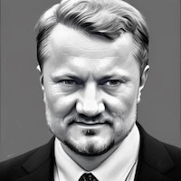
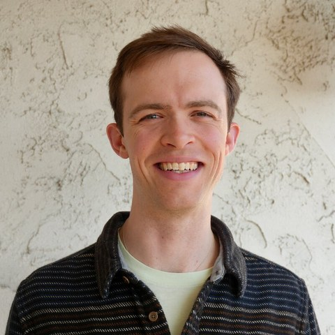
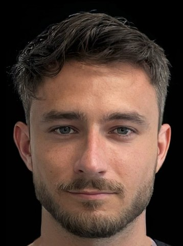
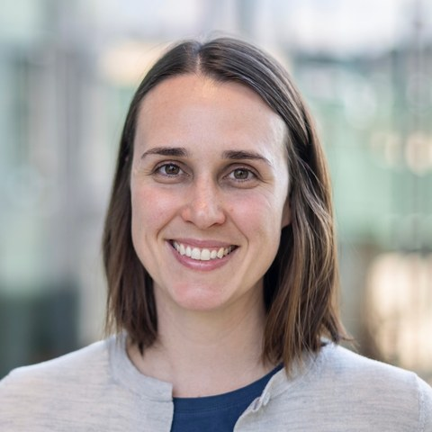
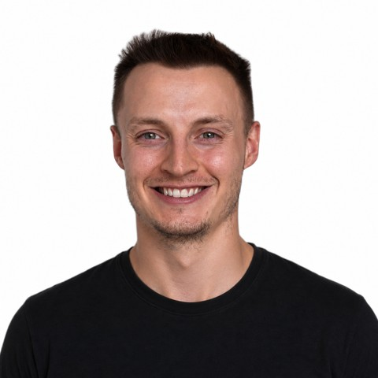
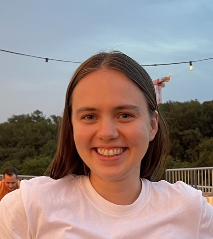
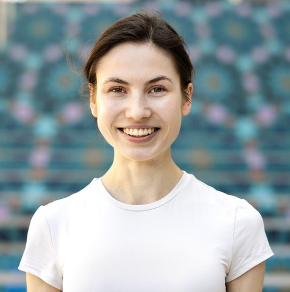
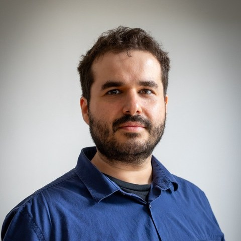
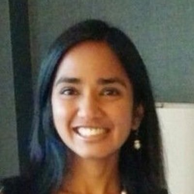
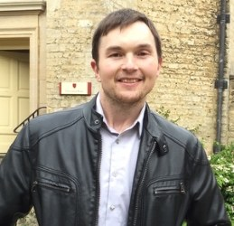

Scaling foundation model training across distributed, heterogeneous compute — from inter-datacenter training to internet-scale collaboration.
Training large-scale foundation models today depends on massive, centralized GPU clusters that are inaccessible to most academic institutions, startups, and industries.
This concentration of compute creates high barriers to entry, centralizes AI innovation, and limits broader progress in developing and studying frontier-scale foundation models. Decentralization and resource pooling provide a way to enable large-scale runs without this barrier, by training models across geographically distributed and heterogeneous devices — from coordinated inter-datacenter settings to consumer devices collaborating over the internet.
This workshop brings the open-model and decentralized-training communities together around the systems-and-optimization stack required to make permissionless, real-world decentralized training practical: communication efficiency, asynchronous optimization, heterogeneous systems, fault tolerance, and security.
All deadlines 23:59 anywhere on Earth. The OpenReview submission portal will be linked here when it opens.

KAUST
Professor of Computer Science at KAUST, where he leads the Optimization and Machine Learning Lab. One of the original developers of federated learning and an expert in randomized, distributed, and communication-efficient optimization algorithms.

Interconnects · formerly Ai2
Author of Interconnects, the leading newsletter on the open-model ecosystem, and an expert in RLHF and open language model post-training. Formerly post-training lead at the Allen Institute for AI (Ai2), where he developed RewardBench and led the Tülu 3 post-training recipe.
Together AI
Distinguished Research Scientist at Together AI and a pioneer of fault-tolerant decentralized training, including SWARM parallelism, Hivemind, and Petals — frameworks for training and serving large models over unreliable, heterogeneous devices.

Pluralis Research
Founder of Pluralis Research and a pioneer of Protocol Learning — open-source foundation model development via decentralized compute collaborations, including model-parallel training over the internet. Previously an applied scientist at Amazon.

Carnegie Mellon University
Leonardo Associate Professor of Machine Learning at Carnegie Mellon University and Sloan Research Fellow; an expert in federated learning and communication-efficient distributed optimization, including the CoCoA framework and foundational work on the challenges and methods of federated learning.
Schedule is tentative; keynote speaker assignments will be announced closer to the workshop.
We encourage contributions addressing the core challenges of open, collaborative, and decentralized training, including but not limited to:
Each submission will receive three reviews, with a cap of three papers per reviewer. Our program committee includes international experts with reviewing experience at top-tier conferences and recent workshops such as MCDC@ICLR'25 and FL@FM-NeurIPS'24. Organizers follow the NeurIPS conflict-of-interest policy: any submission with a conflict involving an organizer will be handled entirely by non-conflicted organizers. Six accepted papers will be selected for oral presentation, and all accepted papers will be presented in the poster session. Full reviewing details, including anonymization requirements, will be announced when the OpenReview portal opens.
We will present awards for the best paper, best student paper, and best tiny paper. Specific details will be communicated closer to the workshop date.
We are recruiting reviewers from the broader community. If you work on distributed or decentralized training, federated learning, communication-efficient optimization, ML systems, or security for collaborative learning, we would be grateful for your help. To volunteer, email us.
Because this workshop is non-archival, concurrent submission to other venues is permitted (subject to those venues' policies), and accepting a paper here does not preclude its later publication elsewhere. Accepted papers and the workshop schedule will be made publicly available on this website, and talks will be made public after the workshop.
All authors, reviewers, and attendees are expected to adhere to the NeurIPS Code of Conduct.
Submissions are due August 28, 2026. The OpenReview portal opens soon.
Pluralis Research · ANU
Founding Scientist at Pluralis Research and Visiting Researcher at the Australian National University. Previously a senior ML scientist at Amazon and a research fellow at Oxford and ANU; works on optimization, continual learning, and robust decentralized training algorithms.
Pluralis Research · U Adelaide
Founding Scientist at Pluralis Research and Visiting Research Fellow at the University of Adelaide; PhD from ANU. Previously a research scientist at Amazon; works on implicit neural representations, efficient decentralized training, and optimization on manifolds.

Mila · UdeM
Final-year PhD student at Mila / Université de Montréal advised by Irina Rish and Eugene Belilovsky; FRQNT PhD scholar. Works on meta-learned optimizers, continual pre-training, and optimizers for cross-datacenter and over-the-internet pre-training; previously at Meta FAIR and Capital One.

University of Zurich
Assistant Professor of AI and Optimization at the University of Zurich. Previously a postdoctoral researcher at Stanford; PhD from EPFL in the Machine Learning and Optimization lab with Martin Jaggi. Works on optimization for decentralized and collaborative learning and privacy.

KAUST
PhD student at KAUST advised by Peter Richtárik and a Google PhD Fellow in Algorithms and Optimization. Develops scalable optimization methods with strong theoretical guarantees for distributed, federated, and communication-efficient learning; previously at Warwick and Oxford.

Concordia · Mila
Associate Professor at Concordia University and member of Mila, leading a research group on efficient training for large-scale deep learning. Research spans decentralized learning, federated learning, and model parallelism; co-organized workshops at ICML, ICLR, and NeurIPS.

Reflection AI · Stanford
Researcher at Reflection AI and adjunct professor at Stanford; Program Chair for MLSys 2026. Technical lead of the 540B PaLM model and a lead contributor to Gemini pre-training at Google; now helping build frontier open intelligence accessible to all.

Cambridge · Flower AI
Professor of Machine Learning Systems at the University of Cambridge, where he leads the CaMLSys lab; co-founder and Chief Scientific Officer of Flower Labs, creators of the Flower federated learning framework. Royal Academy of Engineering Chair in Decentralized AI.
Interested in sponsoring the workshop? Get in touch.
Email the organizers.
For submission questions, sponsorship enquiries, accessibility requests, or anything else.